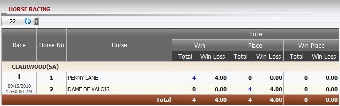

Horse Racing
Definition:
Show master’s win/loss based on position taking for tickets which have bet type Win, Place or Win/Place. This report displays all running and settled tickets for current day only. To view the bet list, click on the amount under Total column.

figure 1.1
With CLAIRWOOD (SA), members bet on the following horses :
- PENNY LANE: stake = 20, bet type: Win, master position taking(PT) = 20%.
--> Master's earning based on PT = stake * Master PT = 20 * 20% = 4.
- DAME DE VALOIS: stake=20, bet type: Place, Master PT = 20%.
--> Master's earning based on PT = stake * Master PT = 20 * 20% = 4.
Note: If these tickets are still running, all win/loss amount will be 0.